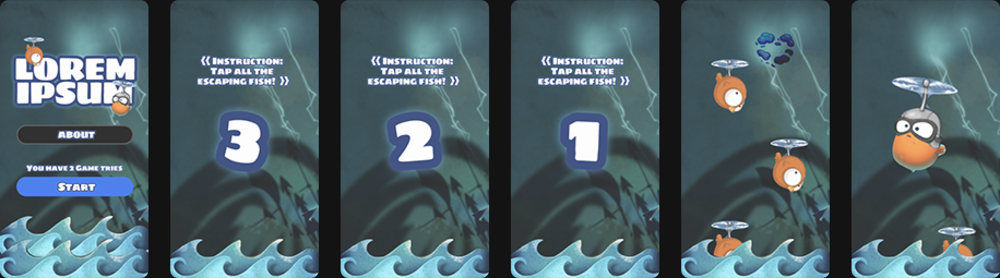

Mobile: Gamifying Boots Loyalty Card Scheme
Challenge
Boots Advantage Card has a large loyal cardholder base but has been on a steady decline over the years in Advantage Card transactions and increase in lapsed customers. Customer needs and expectations are evolving driven by the rise of discount retailers and changing nature of loyalty engendered through the likes of Amazon Prime and Tesco Clubcard Plus.
Solution, and my Role
A gamified mobile experience of popping bubbles when user earns their reward (like digital offers). My contribution is on designing the interactions and user interface.
1. Ideation Phase
Boots core audience is women of 25-55 years of age. Further, we looked into what makes popular mobile casual games click with this group. Take-aways:
- Regularly introduces novel events or items, giving the player a reason to regularly come back. This can be anything from new assets, game plays, to challenges.
- Follow the customer journey and reward them at the right time. For instance, a player's first time user experiences should be extremely rewarding.
2. Design Phase
2.1 Hi-fi iteration 1
Delivery time being the main constraint, I proceeded to design high fidelity screen flow. For the first iteration, my primary goal was to validate the game narrative ("Tap the escaping fish and frogs!) and if the design mets the technical constraints. Some of the stakeholders feedback include:
- Game narrative must involve have bubbles as assets, no matter what. And this needs to be much closer to Boots branding
- Earning a reward from popping the right bubble should not halt the entire game play.
2.2 Hi-fi iteration 2
I used Sketch to create a basic interactive prototype: